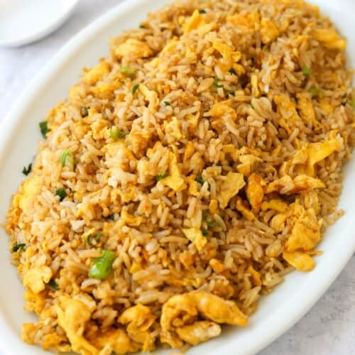

Egg Fried Rice
Recipe by: Me

Description
My own personal egg fried rice recipe that I
often make for lunch.
Ingredients
- Eggs
- Day Old Cooked Rice
- Soy Sauce
-
Meat: Pork, Beef, Chicken
often already cooked and chopped
- Onions: diced
- Garlic: minced/ pressed
- Five Spice Powder
- White pepper
- Green Onion: sliced and separated based on whites and greens
Instructions
-
Put a wok to heat up over high heat, add neutral oil (vegetable, peanut, etc).
-
Lightly beat your eggs.
-
when oil is shimmering, add your onion, garlic and the whites of the green onion. Stir for
30 seconds, then add your meat.
-
Stir this mixture for a minute being careful not to burn the onion or garlic. Push everything to
the side of the wok and add your eggs.
-
let the bottom of the egg cook before pushing the edges to the center and allowing the still wet
eggs to fill in the gaps. Once the eggs are almost fully cooked start to stir as if scrambling.
-
Add the Rice and stir/ toss the entire mixture, once everything is mixed together, add the white pepper,
soy sauce and five spice powder, and stir/ toss well to combine and coat all of the rice.
-
Place your rice onto a plate or into a bowl and garnish with the green slices of green onion.